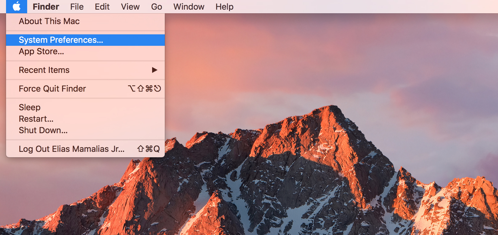
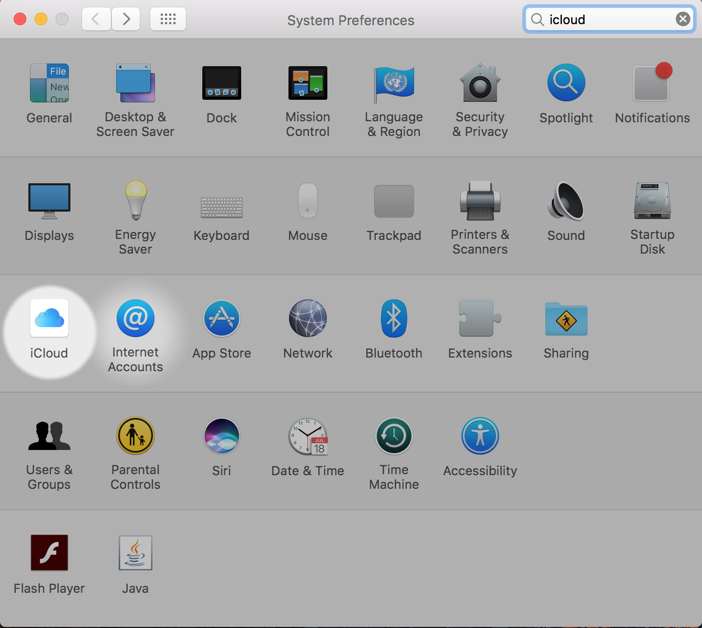
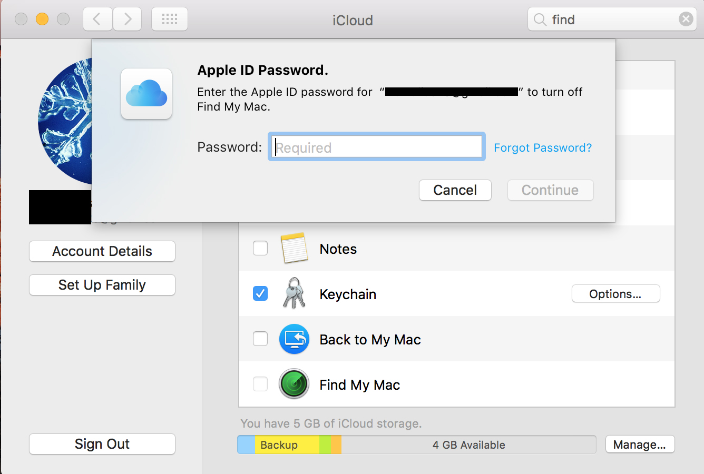

How to turn off "find my mac" on your Mac
-
Click the Apple logo at the top left hand side of your Mac, and click the System Preferences.

-
On System Preferences panel, find the iCloud button/icon and click on it.

-
On iCloud panel, uncheck the Find My Mac at the right hand side of the panel and you will be prompt to enter your iCloud password, enter it, and click Continue.

- Great! you have now turned off the "Find my Mac"
Sv version How to turn off "find my iphone" via iPhone
1 Click Settings from the Home screen.
2 Click iCloud.
3 Click Find My iPhone and Switch it Off
4 Input your Apple ID password to confirm and click Turn off.
No version How to turn off "find my iphone" via iPhone
1 Click Settings from the Home screen.
2 Click iCloud.
3 Click Find My iPhone and Switch it Off
4 Input your Apple ID password to confirm and click Turn off.